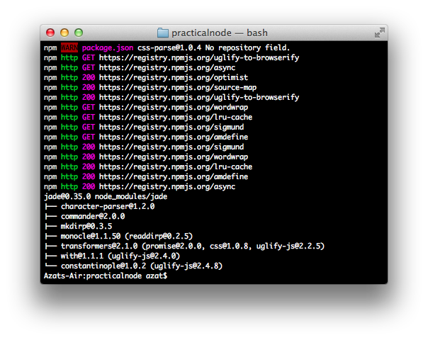
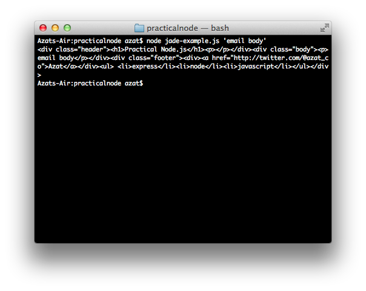

Learn Node.js
UPDATE: Want to learn Node.js, Express.js, MongoDB, Meteor and React.js in JUST TWO DAYS, in-person from me and other experts on the subject? Join us on Jan 30-31 in sunny San Francisco, CA. When I started working at Storify as a Node.js Engineer. The tech stack was Express and Jade. I hate to admit it, but I struggled with Jade a lot! Before, I mostly worked with Underscore, and Handlebars. I attempted to modify some HTML in the Jade templates. Other times I would only change the text. Those were trivial updates, but very often they cause the whole server to crash. I was failing miserably to learn by trial and error. I hated Jade. I was starting to hate editing templates as well. Then I had a light bulb moment: I need a tutorial. I went to the official docs. I wish this article existed at that time. After spending just an hour learning Jade, I was able to use Jade and make all the changes to templates smoothly. Smart people learn by their mistakes, and wise people learn from others. Don’t repeat my folly. Skim through this Jade tutorial to harness the power of this wonderful template language. Tip: Right now, I am running a holiday deal on my biggest online course. It's about Node.js, MongoDB and Express.js. It's very beginner friendly, and a GREAT DEAL too! Don't be left out while the rest of the world is jumping on the Node.js train. Treat yourself and acquire a new skill. Start learning Node.js. A template engine is a library or a framework that uses some rules/languages to interpret data and render views. In the case of web applications, views are HTML pages (or parts of them), but they can be JSON or XML files, or, in desktop programs, GUIs. For those of you familiar with the model–view–controller concept, templates belong to the view. In web apps, it’s beneficial to use templates because we can generate an infinite number of pages dynamically with a single template! Another side benefit is when we need to change something; we can do it in one place only. If we go back to the diagrams in the previous chapter (traditional vs. REST API approaches), we can deduce that templates can be compiled into HTML either server-side (traditional approach) or client-side (REST API approach). No matter which approach we take, the syntax of the libraries themselves remains intact. In this article, I’ll cover the following: Jade syntax and features Jade standalone usage Jade Syntax and Features Jade is a Node.js brother of Haml, in the sense that it uses whitespace and indentation as part of its language. Therefore, we need to be careful to follow the proper syntax. You can follow the Jade syntax examples in this section, online, at the official web site’s demo page (http://jade-lang.com/demo) or at the @naltatis resource (http://naltatis.github.io/jade-syntax-docs/), or by writing standalone Node.js scripts (examples are presented in “Jade Standalone Usage,” which appears later in this chapter). Tags Any text at the beginning of a line—by default—is interpreted as an HTML tag. The main advantage of Jade is that this text renders both closing and opening tags for the HTML element, as well as the <>symbols. Therefore, we save many keystrokes as developers writing in Jade! The text following a tag and a space (e.g.,tag) is parsed as the inner HTML (i.e., content inside the element). For example, if we have the following Jade code: Body div h1 Practical Node.js p The only book most people will ever need. div footer © Apress The output of the template above will be: Practical Node.js
The only book most people will ever need.
Variables/Locals Data that are passed to the Jade template are called locals. To output the value of a variable, use =. See the following examples: Jade code: h1= title p= body Locals: { title: "Express.js Guide", body: "The Comprehensive Book on Express.js" } HTML output:Express.js Guide
The Comprehensive Book on Express.js
Attributes Attributes are added by putting them into parentheses right after the tag name. They follow name=value format. In addition, multiple attributes need to be separated by a comma. For example, div(id="content", class="main") a(href="http://expressjsguide.com", title="Express.js Guide", target="_blank") Express.js Guide form(action="/login") button(type="submit, value="save") div(class="hero-unit") Lean Node.js! turns into:Express.js GuideSometimes, the value of an attribute needs to be dynamic. In this case, just use the variable name! The pipe, or |, allows us to write the content of the HTML node on the new line—in other words, the line with the pipe becomes inner text an example is as follows: a(href=url, data-active=isActive) label input(type="checkbox", checked=isChecked) | yes / no The template above is provided with locals: { url: "/logout", isActive: true, isChecked: false } And they both, i.e., template and locals data, produce output: Note that the attribute with the value false is omitted from the HTML output. However, when no value is passed, true is assumed—for example: input(type='radio', checked) input(type='radio', checked=true) input(type='radio', checked=false) Literals For convenience, we can write classes and IDs right after tag names. For example, we can then apply lead and center classes to a paragraph, and create a div element with the side-bar ID and pull-right class (again, the pipe signifies an inner text): div#content p.lead.center | webapplog: where code lives #side-bar.pull-right span.contact.span4 a(href="/contact") contact usLearn Node.jsNote that if the tag name is omitted, div is used instead. Text Outputting raw text is done via |—for example: div | Jade is a template engine. | It can be used in Node.js and in the browser JavaScript. Script and Style Blocks Sometimes, developers want to write chunks of content for script or style tags in the HTML! This is possible with a dot. For example, we can write inline front-end JavaScript like this: script. console.log('Hello Jade!') setTimeout(function(){ window.location.href='http://rpjs.co' },200)) console.log('Good bye!') JavaScript Code Contrary to the previous example, if we want to use any JavaScript at template compilation time—in other words, to write executable JavaScript code that manipulates the output of the Jade (i.e., HTML)—we can use the -, =, or != symbols. This might come in handy when we output HTML elements and inject JavaScript. Obviously, these types of things should be done carefully to avoid cross-site scripting (XSS) attacks. For example, if we want to define an array and output <> symbols, we can use !=. - var arr = ['','','webapplog: where code lives
contact us'] ul - for (var i = 0; i< arr.length; i++) li span= i span!="unescaped: " + arr[i] + " vs. " span= "escaped: " + arr[i] produces this: ■ T i p One of the main differences between Jade and Handlebars is that the former allows pretty much any JavaScript in its code whereas the latter restricts programmers to only a handful of built-in and custom-registered helpers. Comments When it comes to comments, we have a choice to output them or not. For the former, use JavaScript style //; for the latter, use //-. For example, // content goes here p Node.js is a non-blocking I/O for scalable apps. //- @todo change this to a class p(id="footer") Copyright 2014 Azat outputs:
- 0unescaped: vs. escaped: <a>
- 1unescaped: vs. escaped: <b>
- 2unescaped:
vs. escaped: <c>Node.js is a non-blocking I/O for scalable apps.
Conditions (if ) Interestingly enough, in addition to the standard JavaScript code where the if statement can be used by prefixing it with -, we can use a minimalistic Jade alternative with no prefix and no parentheses—for example: - var user = {} - user.admin = Math.random()>0.5 if user.admin button(class="launch") Launch Spacecraft else button(class="login") Log in There’s also unless, which is equivalent to not or !. Iterations (each loops) Similar to conditions, iterators in Jade can be written simply with each— for example: - var languages = ['php', 'node', 'ruby'] div each value, index in languages p= index + ". " + value The HTML output is as follows:The same construction works with objects as well: - var languages = {'php': -1, 'node': 2, 'ruby':1} div each value, key in languages p= key + ": " + value The Jade above is compiled into the HTML output:0. php
1. node
2. ruby
Filters Filters are used when there are blocks of texts written in a different language. For example, the filter for Markdown looks like this: p :markdown # Practical Node.js This book(http://expressjsguide.com), really helps to grasp many components needed for modern-day web development. ■ Note The Markdown modules still need to be installed. The marked and markdown NPM packages are often used for this. There’s no need for an additional configuration, just install them in the project’s local node_modules folder. Interpolation Interpolation in Jade is achieved via #{name}. For example, to output title in a paragraph, do the following: - var title = "Express.js Guide" p Read the #{title} in PDF, MOBI and EPUB The interpolation is processed at template compilation; therefore, don’t use it in executable JavaScript (-). Case Here’s an example of the case statement in Jade: - var coins = Math.round(Math.random()*10) case coins when 0 p You have no money when 1 p You have a coin default p You have #{coins} coins! Mixins Mixins are functions that take parameters and produce some HTML. The declaration syntax is mixin name(param,param2,...), and the usage is +name(data). For example: mixin row(items) tr each item, index in items td= item mixin table(tableData) table each row, index in tableData +row(row) - var node = [{name: "express"}, {name: "hapi"}, {name: "derby"}] +table(node) - var js = [{name: "backbone"}, {name: "angular"}, {name: "ember"}] +table(js) The template and data above produce this HTML:php: -1
node: 2
ruby: 1
express hapi derby Include include is a way to split logic into a separate file for the purpose of reusing it across multiple files. It’s a top-to-bottom approach; we dictate what to use in the file that includes another file. The file that includes is processed first (we can define locals there), then the included file is processed(we can use earlier defined locals). To include a Jade template, use include /path/filename. For example, in file A: include ./includes/header Notice there’s no need for double or single quotes for the template name and its path. It’s possible to traverse up the tree: include ../includes/footer But, there’s no way to use a dynamic value for the file and path (use a variable), because includes/partials are handled at compilation (not at runtime). Extend extend is a bottom-to-top approach (as oppose to include), in the sense that the included file commands which parts of the main file it wants to replace. The way it works is with extend filename and block blockname statements: In file_a: block header p some default text block content p Loading ... block footer p copyright In file_b: extend file_a block header p very specific text block content .main-content Standalone Jade Usage Template engines are not always used with Node.js (and frameworks like Express.js). Sometimes, we might just want to use Jade in a standalone manner. The use cases include generating an e-mail template, precompiling Jade before deployment, and debugging. In this section, we do the following: Install a Jade module Create our first Jade file Create a Node.js program that uses the Jade file Compare jade.compile, jade.render, and jade.renderFile To add a jade dependency to your project, or if you’re starting from scratch from an empty project folder, do the following: Create an empty node_modules folder with $ mkdir node_modules Install and add jade to package.json with $ npm install jade –save. See the results in Figure 4–1 . Figure 4–1. Installing Jade  Figure 4–1. Installing Jade Let’s say we have some Node.js script that sends e-mail and we need to use a template to generate HTML dynamically for e-mail. This is how it might look (file jade-example.jade): .header h1= title p .body p= body .footer div= By a(href="http://twitter.com/#{author.twitter}")= author.name ul each tag, index in tags li= tag In this case, our Node.js script needs to hydrate, or populate, this template with the following data: title: string body: string author: string tags: array We can extract these variables from multiple sources (databases, file systems, user input, and so on). For example, in the jade-example.js file, we use hard-coded values for title, author, tags, but pass through a command-line argument for body: var jade = require('jade'), fs = require('fs'); var data = { title: "Practical Node.js", author: { twitter: "@azat_co", name: "Azat" }, tags: ['express', 'node', 'javascript'] } data.body = process.argv[2]; fs.readFile('jade-example.jade', 'utf-8', function(error, source){ var template = jade.compile(source); var html = template(data) console.log(html) }); In this way, when we run $ node jade-example.js 'email body', we get the output shown in Figure 4–2 . Figure 4–2. The result of jade-example output  Figure 4–2. The result of jade-example output The “prettified” HTML output is as follows:
backbone angular ember Practical Node.js
In addition to jade.compile(), the Jade API has the functions jade.render() and jade.renderFile(). For example, the previous file can be rewritten with jade.render(): var jade = require('jade'), fs = require('fs'); var data = { title: "Practical Node.js", author: { twitter: "@azat_co", name: "Azat" }, tags: ['express', 'node', 'javascript'] } data.body = process.argv[2]; //jade.render fs.readFile('jade-example.jade', 'utf-8', function(error, source){ var html = jade.render(source, data) console.log(html) }); Furthermore, with jade.renderFile, the jade-example.js file is even more compact: var jade = require('jade'), fs = require('fs'); var data = { title: "Practical Node.js", author: { twitter: "@azat_co", name: "Azat" }, tags: ['express', 'node', 'javascript'] } data.body = process.argv[2]; //jade.renderFile jade.renderFile('jade-example.jade', data, function(error, html){ console.log(html) }); ■Note Jade can also be used as a command-line tool after installing it with the -g or --global option via NPM. For more information, run jade -h or see the official documentation (http://jade-lang.com/command-line/). To use Jade in a browser, you can use browserify (https://github.com/substack/node-browserify) and its jadeify (https://github.com/substack/node-jadeify) middleware. ■Note To use the same Jade templates on front-end (browser) and server sides, I recommend jade-browser (https://www.npmjs.org/package/jade-browser) by Storify, for which I was the maintainer for a time during my work there. jade-browser acts as an Express.js middleware and it exposes server-side templates to the browser along with a helpful utility functions. GitHub: ttps://github.com/storify/jade-browser. This ends this quick guide on Jade. In the next posts, I’ll cover related topics: Handlebars syntax Handlebars standalone usage Jade and Handlebars usage in Express.js 4 Project: adding Jade templates to Blogemail body